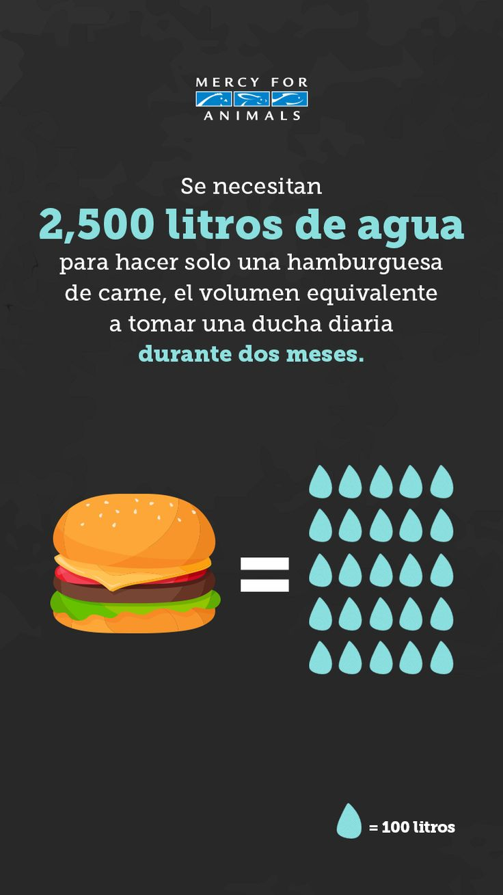

VEGANISMO E IMPACTO AMBIENTAL
"La ganadería industrial es responsable del 70% de la desforestación en el Amazonas"
Juan Sebastian Arias Sanchez
¿QUÉ ES EL VEGANISMO?
El veganismo no es una forma de alimentación o un estilo de vida, es una Postura ética que incluye a los demás animales como seres que debemos considerar moralmente. No busca regular la explotación animal o disminuir el sufrimiento de estos, mucho menos reducir su consumo, sino que busca eliminar la explotación y esclavitud de los animales en todas sus formas, busca que dejemos de considerarlos objetos.
De a cuerdo a The Vegan Society, el veganismo es:
“Una filosofía y forma de vida que busca excluir, en la medida de lo posible y practicable, todas las formas de explotación y crueldad hacia los animales, incluyendo su uso para comida, ropa, o cualquier otro propósito”.
IMPACTO AMBIENTAL
"Una dieta vegana es probablemente la mejor forma de reducir tu impacto en el planeta Tierra, no solo los gases de efecto invernadero, sino la acidificación global, la eutrofización, el uso de suelo y agua"
- Joseph Poore, Investigador de Ciencias Ambientales, Universidad de Oxford
La ganadería es uno de los mayores contribuyentes de la contaminación, tanto del agua como del aire, de la emisión de gases de efecto invernadero y de la deforestación. La producción de carne y lácteos utiliza el 83% de las tierras agrícolas y produce el 60% de las emisiones de gases de efecto invernadero en la agricultura.
Por ejemplo, un estudio realizado en el 2018 por la Universidad de Michigan encontró que un cuarto de libra de Beyond Meat Burger (Hamburguesa vegana), en comparación con un cuarto de libra de una hamburguesa de carne, requiere 99.5% menos agua, 93% menos tierra 46% menos energía y genera 90% menos de emisiones de gases de efecto invernadero en comparación con la producción, envasado y distribución de carne de vacas de EE.UU. Sin mencionar que son casi idénticas, desde el punto de vista nutricional.
DEFORESTACIÓN
La ganadería industrial es responsable del 70% de la deforestación en el Amazonas. Debido a los monocultivos de soja y maíz, que pese a lo que cree la mayoría y se dice en contra de la alimentación basada en plantas, estos cultivos que arrasan buena parte de América Latina y Asia, se destinan a producir pienso y alimentar ganado, principalmente de Europa; teniendo exactamente que el 80% de la soja sembrada en la amazonia, se destina para alimentar animales.
Seguimiento de la deforestación amazonica desde arriba.
Para tener una idea del tamaño actual de la deforestación, en los últimos 25 años se ha deforestado una superficie boscosa equivalente al territorio de la India, de la cual, la mayoría de esta destrucción se ha producido en América Central y América del Sur. Este proceso destructivo, y en general las actividades relacionadas con la explotación animal para consumo humano, a parte de causar daños ambientales al liberar miles de millones de toneladas de bióxido de carbono, causa extinciones de miles de especies de flora y fauna todos los año.
Por ejemplo, solamente en la industria pesquera, cada año se extraen de los océanos entre 90 a 100 millones de toneladas de peces y tenemos que por 1 libra de pescado capturado, se capturan hasta 5 libras de especies marinas no deseadas , las cuales se clasifican como muerte colateral.